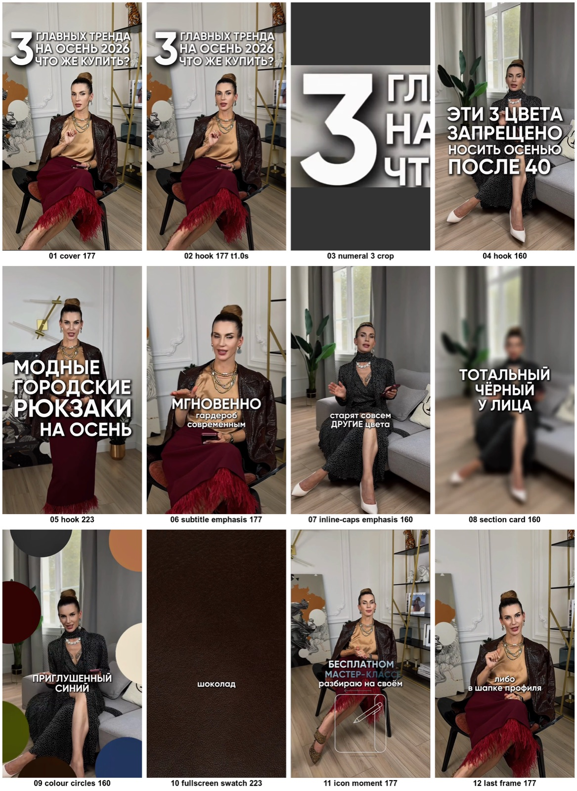

Разбор 5 роликов · Ольга Делевски · 23 сентября 2026
Ольга Делевски (Чистова) — стилист-имиджмейкер «больше 15 лет», своя школа стиля. Все пять роликов ведут на бесплатный 3-дневный марафон «Перезагрузка», дальше — платные уроки по 5000 ₽. Разобрали 5 клипов: расшифровки, тайминги, раскадровки.
1 · Цифры
| № | Тема | Дата | Длина | Просмотры | Лайки |
|---|---|---|---|---|---|
| 1 | Три тренда осени 2026 | 15.09 | 60 с | 2,77 млн | 19,5 тыс. |
| 2 | Три цвета, которые старят после 40 | 12.09 | 75 с | 2,01 млн | 17,0 тыс. |
| 3 | «Мне ничего не подойдёт» → нужна система | 14.09 | 52 с | 235 тыс. | 1,1 тыс. |
| 4 | Городской рюкзак: правила | 19.09 | 63 с | 195 тыс. | 1,2 тыс. |
| 5 | Образ для воспитателя | 19.09 | 118 с | 85 тыс. | 1,1 тыс. |
Два хита — списки «три штуки + сезон» на 60–75 секунд. Ролик про профессию (2 минуты) собрал меньше всех.
Ролик 1 · 2,77 млн просмотров
Ролик 2 · 2,01 млн просмотров
Ролик 3 · 235 тыс. просмотров
Ролик 4 · 195 тыс. просмотров
Ролик 5 · 85 тыс. просмотров
2 · Формула текста
Число + предмет + сезон, чужое возражение в кавычках или профессия — первая фраза 3–5 секунд.
Вторая фраза — отсечка от привычного: «и нет, я не про…», «это не повод…».
Название → где/что → одна яркая метафора, фразы короткие и назывные.
Цвета словами, не «тёплые тона»: «горький шоколад, винный, графит…».
Одна фраза-правило и обещание, что совет не устареет («минимум 5 лет»).
Мостик («что не рассказала») + приглашение на мастер-класс — дословно одинаковый во всех пяти.
60–75 секунд, 120–150 слов, темп 2 слова в секунду; двухминутный ролик — худший по просмотрам.
Пункты 1–5 берём как есть, пункт 6 (призыв) заменяем на концовку без курса — раздел 5.
3 · На экране

Замеры — storyboards/design-spec.md, полный размер — storyboards/design-pack.png.
4 · Хиты и слабый ролик
Раскадровка и тайминги — storyboards/visual-notes.md.
5 · Что берём себе
Пять сценариев с этой заменой — 02-Сценарии-для-жены.md, разделы 6–8.
Ссылки и файлы
Файлы: 01-Разбор-5-роликов-delevsky.md, 02-Сценарии-для-жены.md, storyboards/.